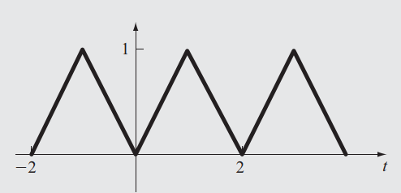
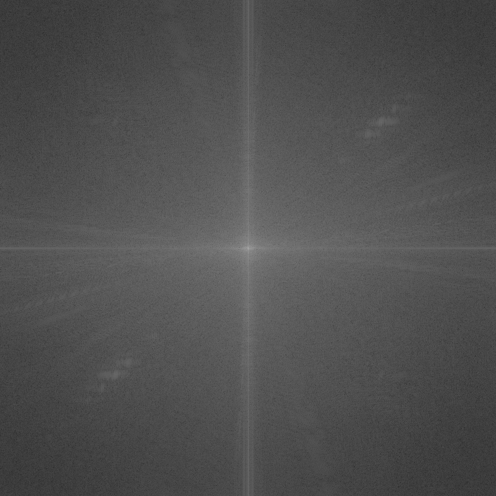
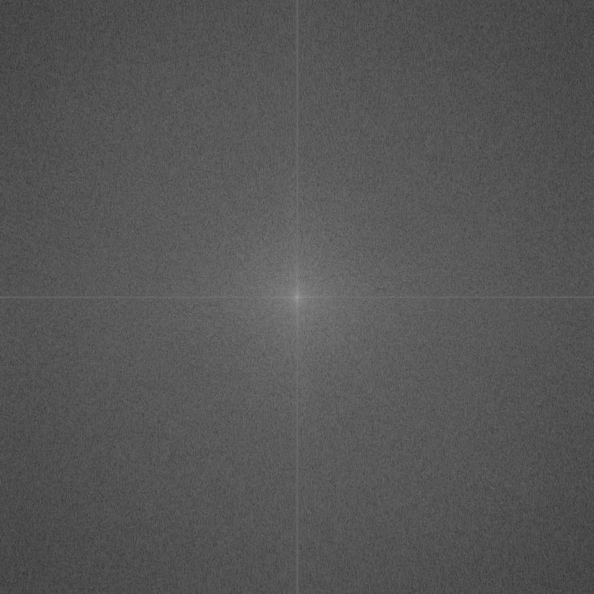
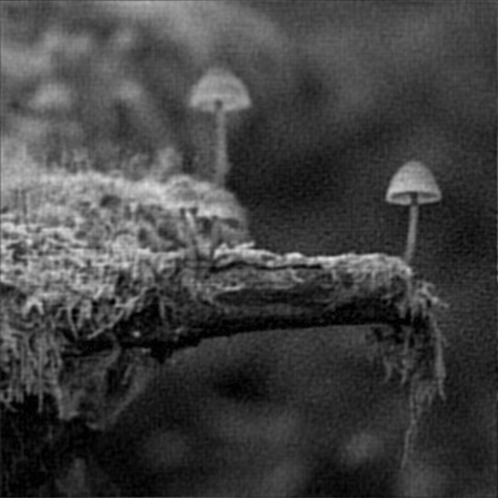

工程數學分組報告
三角波之傅立葉級數
題目之原函數圖如下：

我們可將原函數視為非週期函數 \(f(t) = |t|, t \in [-1, 1]\) 的半幅餘弦展開，由此 我們可以得到 \(T = 2, \ell = \frac{T}{2} = 1\) 。
接著將 \(f(t)\) 轉化成較易積分的形式：
\begin{equation*} f(t) = \begin{cases} t, & t \in [0, 1] \\ -t, & t \in [-1, 0] \end{cases} \end{equation*}並經過一些簡單的運算求出傅立葉級數如下：
\begin{equation*} f(t) = \frac{1}{2} + \sum_{n = 1}^{\infty}(\frac{2 \cdot (\cos n \pi - 1)}{n^2 \pi^2} \cdot \cos n \pi t) \end{equation*}以電腦繪製函數圖形
我們以 Common Lisp 產生數據點，並以 gnuplot 繪製圖形。
首先定義繪圖範圍及取樣頻率，並依據這些產生 t 軸（即 x 軸）的資料點：
(defparameter *plot-range* '(-6 . 6)) (defparameter *sampling-rate* 20000) (defparameter *t* (loop for i from (car *plot-range*) upto (cdr *plot-range*) by (/ *sampling-rate*) collect i))
接著將剛剛計算出來的傅立葉級數以程式函數的形式寫出來：
(declaim (ftype (function (number fixnum) number) inside-sigma)
(inline inside-sigma))
(defun inside-sigma (tt n)
(/ (* 2 (- (cos (* n pi)) 1) (cos (* n pi tt)))
(* (expt pi 2) (expt n 2))))
(declaim (ftype (function (number &optional fixnum) number) f)
(inline f))
(defun f (tt &optional (n 5))
(+ 1/2 (loop for i from 1 upto n
sum (inside-sigma tt i))))
有了函式後便可開始計算 y 軸的資料點，這裡我們分別計算展開式前四項的資料點，最後 將他們加總得到我們想要的資料：
(defparameter *term1* (map 'list (lambda (x) (f x 0)) *t*)) (defparameter *term2* (map 'list (lambda (x) (inside-sigma x 1)) *t*)) (defparameter *term3* (map 'list (lambda (x) (inside-sigma x 3)) *t*)) (defparameter *term4* (map 'list (lambda (x) (inside-sigma x 5)) *t*)) (defparameter *y* (map 'list #'+ *term1* *term2* *term3* *term4*))
接著我們就可以將所產生出的繪圖資料存到檔案中：
(defparameter output-file "plot-data.txt") (with-open-file (s output-file :direction :output :if-exists :supersede :if-does-not-exist :create) (loop initially (format s "# x y term1 term2 term3 term4~%") for x in *t* for y in *y* for term1 in *term1* for term2 in *term2* for term3 in *term3* for term4 in *term4* do (format s "~@{~f~^ ~}~%" x y term1 term2 term3 term4)))
以 gnuplot 將圖形畫出：
set xlabel "t"
set ylabel "y"
set xzeroaxis
set yzeroaxis
set size ratio -1
set yrange [-2:2]
set terminal svg font "IBM Plex Mono, 8" size 800, 400 dynamic
set output "fourier.svg"
plot "plot-data.txt" using 1:2 with lines linewidth 3 title "f(t)", \
"plot-data.txt" using 1:3 with lines title "term1", \
"plot-data.txt" using 1:4 with lines title "term2", \
"plot-data.txt" using 1:5 with lines title "term3", \
"plot-data.txt" using 1:6 with lines title "term4", \
圖形如下：

傅立葉分析之應用實作——圖片壓縮
快速傅立葉變換（Fast Fourier Transform, FFT）
雖然有快速傅立葉變換的函式庫可以使用，不過我們認為它使用起來不太順手，且我們想更 了解快速傅立葉變換的演算法是如何實作的，因此我們選擇自己來實作傅立葉變換的演算法。
這裡只會提到以演算法來實行快速傅立葉變換的步驟，如果想了解更多有關傅立葉變換的內 容，可以觀看這支影片。
總之，快速傅立葉變換的遞迴演算法如下：
- 如果傳進來的列表內只有一個數據點，就直接回傳該數據點
- 將要進行傅立葉變換的數據點列表分為偶次項與奇次項
- 對剛剛分出來的奇偶次項列表再遞迴做一次 FFT
- 將第 2 點的結果做一些簡單的運算後回傳
首先我們找出數據點的數目，並將他存入 n。接著我們檢查傳進來的是否只有一個數據點， 如果是，我們就直接回傳 f：
(defun fft (f) (let ((n (list-length f))) (cond ((= n 1) f)
如果不只一項，就開始計算奇偶項等東西。我們在此先定義一個 \(\omega\) 方便後續的計 算：
(t
(loop with omega = (exp (/ (* -2 pi (complex 0 1)) n))
接著像我們剛剛提到的，將傳入的列表 f 分成奇次項和偶次項：
and (f-even f-odd) = (loop for i from 0 below n
if (evenp i)
collect (nth i f) into even-terms
else
collect (nth i f) into odd-terms
finally (return (list even-terms
odd-terms)))
並分別再對這兩個奇偶次項做遞迴 FFT：
with y-even = (fft f-even)
and y-odd = (fft f-odd)
初始化我們的結果列表 y，它的大小跟輸入的列表一樣大：
and y = (make-list n :initial-element 0)
接著以奇偶次項 FFT 後的結果求出我們的結果 y，並將他回傳：
and middle = (floor n 2)
for i from 0 below middle
for even-term = (nth i y-even)
for odd-term = (* (expt omega i) (nth i y-odd))
do (setf (nth i y) (+ even-term odd-term)
(nth (+ i middle) y) (- even-term odd-term))
finally (return y))))))
反快速傅立葉變換（Inverse Fast Fourier Transform, IFFT）
IFFT 的演算法其實跟 FFT 的演算法非常相似，它們間只有差在 \(\omega\) 和最後的結果 要除以 n。所以這裡就不多做說明
(defun ifft (f) (labels ((ifft-core (f) (let ((n (list-length f))) (cond ((= n 1) f) (t (loop with omega = (exp (/ (* 2 pi (complex 0 1)) n)) and (f-even f-odd) = (loop for i from 0 below n if (evenp i) collect (nth i f) into even-terms else collect (nth i f) into odd-terms finally (return (list even-terms odd-terms))) with y-even = (ifft-core f-even) and y-odd = (ifft-core f-odd) and y = (make-list n :initial-element 0) and middle = (floor n 2) for i from 0 below middle for even-term = (nth i y-even) for odd-term = (* (expt omega i) (nth i y-odd)) do (setf (nth i y) (+ even-term odd-term) (nth (+ i middle) y) (- even-term odd-term)) finally (return y))))))) (let ((n (list-length f))) (map 'list (lambda (x) (/ x n)) (ifft-core f)))))
不過這裡需要注意的地方是，以上的 FFT 和 IFFT 演算法只有在傳入的資料點是\(2^{k}\) 點時才能正常運作。通用於任何資料點數的 FFT 和 IFFT 演算法由於較為複雜，我們尚無 時間進行實作。
二維傅立葉變換
由於圖片是二維的，所以我們需要使用二維傅立葉變換。我們這裡將圖片視為一個 \(m \times n\) 的矩陣，矩陣中的每個元素相當於圖片在該點的亮度。而如果我們想對這個矩 陣進行傅立葉變換，只要先對列做一次傅立葉變換再對行做一次傅立葉變換即可（順序顛倒 也可以）。
我們先定義一個可以方便後續運算的函式，這個函式可以達成將矩陣轉置的效果：
(defun transpose (m) (apply #'map 'list #'list m))
接著我們就可以寫出二維傅立葉變換的函式，此函式實際是先後對矩陣的列和行進行傅立葉 變換。我們還可以額外提供一個函式給這個函式做參數，如此就可以不必為傅立葉變換和反 傅立葉變換分別寫兩個函式。
(defun ft2 (m &optional (f #'fft)) (transpose (map 'list f (transpose (map 'list f m)))))
這個函式可以將二維頻譜四邊的訊號移到中央，類似於 Octave 中的 fftshift 函式的功
能：
(defun fft-shift (m) (transpose (map 'list (lambda (list) (let* ((middle (floor (list-length list) 2)) (first-half (subseq list 0 middle)) (second-half (subseq list middle))) (append second-half first-half))) (transpose (map 'list (lambda (list) (let* ((middle (floor (list-length list) 2)) (first-half (subseq list 0 middle)) (second-half (subseq list middle))) (append second-half first-half))) m)))))
圖片處理
雖然這個圖片壓縮的方法可以應用在彩色的圖片上，不過採用灰階圖片來做概念驗證較為方 便，所以我們會先將讀進來的圖片轉成灰階的格式。
以下這個函式採用 \(\textup{greyscale} = 0.3 \cdot \textup{R} + 0.59 \cdot \textup{G} + 0.11 \cdot \textup{B}\) 將彩色的圖片轉成灰階：
(defun rgb-to-greyscale (image) (loop with height = (png:image-height image) and width = (png:image-width image) with new-image = (png:make-image height width 1) for h from 0 below height do (loop for w from 0 below width do (setf (aref new-image h w 0) (round (loop for i from 0 below 3 for colour = (aref image h w i) if (= i 0) sum (* 0.3 colour) end if (= i 1) sum (* 0.59 colour) end if (= i 2) sum (* 0.11 colour) end)))) finally (return new-image)))
此外在 Lisp 中對列表的操作較方便，但是圖片解碼後卻是陣列。所以我們使用以下兩個函 式來在陣列和列表中互換：
(defun greyscale-to-list (image) (loop with height = (png:image-height image) and width = (png:image-width image) for h from 0 below height collect (loop for w from 0 below width collect (aref image h w 0)))) (defun list-to-greyscale (list) (loop with height = (list-length list) and width = (list-length (car list)) with image = (png:make-image height width 1) for h from 0 below height do (loop for w from 0 below width do (setf (aref image h w 0) (min (floor (nth w (nth h list))) 255))) finally (return image)))
實際操作
接著我們便可以開始對圖片進行壓縮，首先讀入原始圖片：
(defvar *original-image* (with-open-file (s "test-image.png" :element-type '(unsigned-byte 8)) (png:decode s)))
前面說過，由於我們的 FFT 和 IFFT 函式只能處理 2 的次方倍個元素，所以我們的圖片長 寬也將是 2 的次方倍。
再來我們先將彩色圖片轉成灰階：
(defvar *original-image-grey* (rgb-to-greyscale *original-image*))
再將這個灰階的陣列轉成列表：
(defvar *original-image-grey-list* (greyscale-to-list *original-image-grey*))
接著對這個灰階圖片的列表做二維傅立葉變換：
(defparameter *transformed-list* (ft2 *original-image-grey-list*))
我們可以接著畫出所變換出的頻譜圖：
(defparameter *spectrum* (list-to-greyscale (map 'list (lambda (list) (map 'list (lambda (x) (* 10 (log (abs x)))) list)) (fft-shift *transformed-list*)))) (with-open-file (s "spectrum.png" :direction :output :element-type '(unsigned-byte 8) :if-exists :supersede :if-does-not-exist :create) (png:encode *spectrum* s))
而這個圖片壓縮演算法是一種破壞性的壓縮算法，意即在壓縮過程中，我們需要丟掉一些資 料。而我們可以通過一個閥值來決定我們要丟掉多少資料：
(defparameter *transformed-list-sort* (sort (apply #'append (map 'list (lambda (list) (map 'list #'abs list)) *transformed-list*)) #'<)) (defparameter *threshold* (nth (round (* 0.99 (list-length *transformed-list-sort*))) *transformed-list-sort*))
接著我們便可以透過剛剛的閥值來對我們變換後的矩陣做過濾，比閥值小的值我們一律將它 歸零，也就是我們捨棄掉這些影響較小的資料：
(defparameter *filtered-list* (map 'list (lambda (list) (map 'list (lambda (x) (if (> (abs x) *threshold*) x 0)) list)) *transformed-list*))
在聽完別組報告後我才發現我整晚沒睡原來是土法煉鋼了一個高通/低通高斯濾波器，只要
把上面的 (> (abs x) *threshold*) 改成 (< (abs x) *threshold*) 就是一個高通濾
波器了。不過高通濾波器濾出來的振幅較弱，需要在最後再將他們放大即可。
將過濾後的列表做二維的反傅立葉變換，來換得圖片的資料：
(defparameter *ifft-list* (ft2 *filtered-list* #'ifft))
因為做完傅立葉變換後，各元素的值都會是複數，因此我們先求出這些複數值的大小（它們 應該在 0 到 255 之間）：
(defparameter *output-image-list* (map 'list (lambda (list) (map 'list #'abs list)) *ifft-list*))
最後將列表轉回成陣列的格式，並存到一個檔案中便完成了：
(defparameter *output-image* (list-to-greyscale *output-image-list*)) (with-open-file (s "output.png" :direction :output :element-type '(unsigned-byte 8) :if-exists :supersede :if-does-not-exist :create) (png:encode *output-image* s))
結果
原始圖：
頻譜圖： 
灰階後：
捨去 50% 的資料後的壓縮圖：
捨去 70% 的資料後：
捨去 99% 的資料後：
原始圖：

頻譜圖： 
灰階後：
捨去 50% 的資料後的壓縮圖：
捨去 70% 的資料後：
捨去 99% 的資料後： 